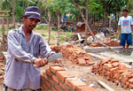
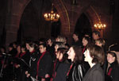

|
Erdbebenopfer: Eine Million Kinder müssen durch den Winter
Spendenaktion von terre des hommes Murgtal/Mittelbaden |
Weihnachten 2004: Die Flutopfer in Südasien brauchen dringend Hilfe. Die Arbeitsgruppe „terre des hommes Murgtal/Mittelbaden“ organisiert eine Spendenaktion. Mehr als 36.000 € kommen zusammen. Das reicht für: lebensrettende Notfallhilfe, Bau von 10 Wohnhäusern, Reparatur von 4 Fischerbooten, Schulplätze für 100 Kinder.
Weihnachten 2005: Zweieinhalb Monate nach dem verheerenden Erdbeben in Pakistan ist die Lage für mehr als 1 Million Kinder im Erdbebengebiet dramatisch. Viele verletzte Kinder sind nicht ausreichend behandelt und mangelernährt. Darüber hinaus ist ihr Leben von der klirrender Kälte bedroht. Für sie geht es ums nackte Überleben. Mehr als 1 Million Kinder müssen zunächst durch den Winter kommen, erst dann kann an langfristige Hilfe gedacht werden.
Hilfe aus Mittelbaden
Über terre des hommes Schweiz und über die Gemeinschaftsaktion „Gemeinsam für Menschen in Not – Entwicklung hilft“ gelangen die Spendengelder aus der Region an die Betroffenen Kinder in Nordkaschmir (Pakistan). Nahezu 5.000 € kamen bisher aus Mittelbaden zusammen (u.a. Firmen- und Schulspenden, Adventskonzert von Salt o vocale). „Das ist jedoch bei weitem noch nicht genug“, so Heinz Wolf von der regionalen Arbeitsgruppe. „Das Ziel ist, dass möglichst viele Kinder den eisigen Winter überleben und danach eine Perspektive für die Zukunft (Wohnung, Bildung, Ausbildung) erhalten.“
Wie setzt terre des hommes die Spenden ein?
 Im Erdbebengebiet versorgt das internationale Kinderhilfswerk mehr als 10.000 Menschen. Der rasche Einsatz nach dem Erdbeben mit 93.000 Toten war möglich, weil sich die erfahrene Organisation seit fünf Jahren in Pakistan um Straßenkinder kümmert. Auch bei der Erdbebenhilfe arbeitet terre des hommes mit lokalen Partnern zusammen. So leistet terre des hommes Hilfe: Bau von öffentlichen Toiletten, Information der Bevölkerung in Sachen Hygiene zur Vorbeugung von Seuchen, Ausstattung von Bäckereien in 15 Dörfern, die 6.000 Menschen versorgen können, Betreuung für traumatisierte Kinder (Gespräche, Spiel und Sport, Ernährung, Familienberatung), Schutz verwaister Kinder vor Missbrauch. Im Erdbebengebiet versorgt das internationale Kinderhilfswerk mehr als 10.000 Menschen. Der rasche Einsatz nach dem Erdbeben mit 93.000 Toten war möglich, weil sich die erfahrene Organisation seit fünf Jahren in Pakistan um Straßenkinder kümmert. Auch bei der Erdbebenhilfe arbeitet terre des hommes mit lokalen Partnern zusammen. So leistet terre des hommes Hilfe: Bau von öffentlichen Toiletten, Information der Bevölkerung in Sachen Hygiene zur Vorbeugung von Seuchen, Ausstattung von Bäckereien in 15 Dörfern, die 6.000 Menschen versorgen können, Betreuung für traumatisierte Kinder (Gespräche, Spiel und Sport, Ernährung, Familienberatung), Schutz verwaister Kinder vor Missbrauch.
 Darüber hinaus bauen terre des hommes und die Partnerorganisationen Behelfsbauten aus Holz und verzinktem Wellblech für 10.000 Obdachlose. Indem die traumatisierten Menschen beim Bau ihrer Hütten mitarbeiten, sind sie aktiv an einem Neuanfang ihres Lebens beteiligt und können so den Verlust von Freunden und Angehörigen sowie das Elend besser verarbeiten und überwinden. Nach der Schneeschmelze im Frühjahr werden dann erdbebensichere Häuser und Schulen errichtet. Darüber hinaus bauen terre des hommes und die Partnerorganisationen Behelfsbauten aus Holz und verzinktem Wellblech für 10.000 Obdachlose. Indem die traumatisierten Menschen beim Bau ihrer Hütten mitarbeiten, sind sie aktiv an einem Neuanfang ihres Lebens beteiligt und können so den Verlust von Freunden und Angehörigen sowie das Elend besser verarbeiten und überwinden. Nach der Schneeschmelze im Frühjahr werden dann erdbebensichere Häuser und Schulen errichtet.
Ihre Spende unter dem Stichwort "Kaschmir":
Sparkasse Gaggenau-Kuppenheim
BLZ 665 512 90
Konto Nr. 120 790
Weitere Informationen:
|
Holzbau Hurrle spendet 1.000 Euro für terre des hommes |
|
|
| Ulrike Dinger von Holzbau Hurrle �berreicht die Hilfe f�r Kinder im Erdbebengebiet (1.000 �) an die Mitarbeiter von terre des hommes Murgtal / Mittelbaden: Heinz Wolf, Barbara Wachsmuth und Josef Luft (v.l.) |
Bereits seit fünf Jahren unterstützt die Fa. Holzbau Hurrle aus Gaggenau terre des hommes Murgtal/Mittelbaden. In dieser Zeitspanne stellte der mittelständische Betrieb aus dem Murgtal 5.750 Euro für Kinderprojekte in zur Verfügung. Ulrike und Joachim Dinger von der Holzbau Hurrle GmbH verzichten seit Jahren auf das Verschicken von Weihnachtspräsenten und unterstützen stattdessen Projekte von terre des hommes, dieses Mal die notleidenden Kinder im Erdbebengebiet Pakistan mit 1.000 Euro. „Die Kunden haben viel Verständnis die Aktion, weil dadurch die unmittelbare und lebensbedrohende Not vieler Kinder gelindert wird und sie wieder eine Zukunft fürs Leben erhalten“, so Ulrike Dinger.
Terre des hommes setzt die großzügige Spende für Kinder im Erdbebengebiet in Kaschmir (Pakistan) ein. Dort versorgt das internationale Kinderhilfswerk mehr als 10.000 Menschen. Der rasche Einsatz nach dem Erdbeben mit 93.000 Toten war möglich, weil sich die erfahrene Organisation seit fünf Jahren in Pakistan um Straßenkinder kümmert. Auch bei der Erdbebenhilfe arbeitet terre des hommes mit lokalen Partnern zusammen. So leistet terre des hommes: Bau von öffentlichen Toiletten, Information der Bevölkerung in Sachen Hygiene zur Vorbeugung von Seuchen, Ausstattung von Bäckereien in 15 Dörfern, die 6.000 Menschen versorgen können, Betreuung für traumatisierte Kinder (Gespräche, Spiel und Sport, Ernährung, Familienberatung), Schutz verwaister Kinder vor Missbrauch.
Weitere Informationen und Fotos
|
Die Katastrophe ist noch nicht überwunden
Ein Jahr nach dem Tsunami: terre des hommes zieht Bilanz
|
Arunrat ist ein scheues, schweigsames Kind. »Früher hatte er vor nichts Angst«, erzählt seine Mutter Leela, »heute schreckt er bei jedem Geräusch auf.« Seit der vierjährige Junge Tod und Zerstörung durch den Tsunami erlebte, verstummte er. Intensiv beschäftigten sich die Mitarbeiter der Organisation Psycho Trust mit ihm und anderen Kindern, die den Schrecken der Flutwelle nicht ohne Hilfe überwinden konnten. Heute spricht Arunrat wieder, und manchmal huscht sogar ein Lächeln über sein ernstes Gesicht.
Psycho Trust ist eine der Organisationen, mit denen das Kinderhilfswerk terre des hommes im Süden Indiens zusammenarbeitet, um den Opfern des Tsunami beim Neuanfang zu helfen. Insgesamt rund 17.000 Kinder wurden durch die Angebote von Sing- und Tanzgruppen, Theater, Spiel- und Gesprächskreisen erreicht, seit am 26. Dezember 2004 die Küsten Südasiens durch den Tsunami verwüstet wurden und 260.000 Menschen ums Leben kamen.
Ein Jahr nach der Katastrophe zieht terre des hommes eine Zwischenbilanz des Wiederaufbaus: Mehr als 12 Millionen Euro Spenden erhielt die Organisation für die Tsunami-Hilfe. Über 8,5 Millionen wurden seither für laufende bzw. bereits abgeschlossene Maßnahmen bewilligt, davon rund 5 Millionen in Indien, 3 Millionen in der indonesischen Provinz Aceh und knapp eine halbe Million in Thailand.
Die psychosoziale Hilfe ist dabei nur einer von mehreren Schwerpunkten der Arbeit. Ging es anfangs noch darum, den Menschen mit Nothilfe das Überleben zu sichern, hat inzwischen längst der Wiederaufbau begonnen: Allein in Indien wurden mehr als 1.000 Häuser errichtet oder wiederhergestellt. Fast 800 Fischerboote und ebenso viele Bootsmotoren konnten repariert werden und sichern den Lebensunterhalt der Familien. Schulen und Vorschulen wurden restauriert und Bildungsprogramme durchgeführt, wodurch mehr als 12.000 indische Schüler wieder regelmäßig zur Schule gehen können.
Auch im indonesischen Aceh, das vom Tsunami am stärksten betroffen war, führt terre des hommes ein umfangreiches Hausbauprogramm durch. Fast 200 Häuser sind fertiggestellt; weitere 550 sind im Bau oder in Planung. Offene rechtliche Fragen und langwierige Genehmigungsverfahren verzögern aber vielerorts den Start der Baumaßnahmen.
»Wir sind zufrieden mit der Hilfe, die wir bisher leisten konnten«, erklärt Michael Bünte, terre des hommes- Soforthilfe-Referent, »aber wir haben noch einen weiten Weg vor uns. Der Wiederaufbau wird uns noch Jahre beschäftigen.« So werde es nun insbesondere darum gehen, die Einkommenssituation der betroffenen Bevölkerung zu stabilisieren: »Nur so können auch die Kinder wieder Hoffnung für die Zukunft schöpfen.« |
"Die Tsunami-Katastrophe war eine Lektion, wie Hilfe besser organisiert werden kann"
Hilfswerkebündnis legt kritische Bestandsaufnahme vor
|
|
„Die Tsunami-Katastrophe und die Art und Weise wie die folgenden Hilfsaktionen abgelaufen sind, sollten als Lektion verstanden werden. Als Lektion, wie künftig Katastrophenhilfe besser geleistet werden kann.“ Mit dieser Quintessenz hat das Hilfswerkebündnis „Gemeinsam für Menschen in Not – Entwicklung hilft!“ die Dokumentation einer Fachtagung zur Katastrophenhilfe veröffentlicht.
Das Bündnis, dem die fünf Hilfswerke Brot für die Welt, medico international, Misereor, terre des hommes und Welthungerhilfe angehören, hat unter dem Titel „Entwicklung in Zeiten von Katastrophen – Lektion gelernt?“ auf der Grundlage einer kritischen Analyse der Tsunami-Hilfe fünf Kernpunkte formuliert:
1. Öffentlichkeitsarbeit und Spendenwerbung dürfen bei den Spendern keine unerfüllbaren Erwartungen wecken. Hilfsorganisationen sollen sich auf Projekte beschränken, die sie tatsächlich umsetzen können. Sie müssen ehrlich sagen, was sie können und was nicht. Es darf von Hilfsorganisationen und Medien nicht länger der Eindruck erweckt werden, als seien die Menschen in Katastrophengebieten nicht in der Lage, sich selbst zu helfen. Vielmehr müssen Selbsthilfebereitschaft und –fähigkeit durch die Katastrophenhilfe gestärkt und dürfen durch Hilfe nicht untergraben werden. Katastrophenhilfe und Wiederaufbau müssen immer den Willen der Betroffenen berücksichtigen und womöglich lokale Nichtregierungsorganisationen einbeziehen.
2. Eine engere Zusammenarbeit der Hilfswerke – sowohl auf nationaler wie auf europäischer Ebene -, mehr Koordination der Arbeit im Katastrophengebiet und eine Klärung von Zuständigkeiten können die Katastrophenhilfe weitaus effizienter machen. Das gilt für Nichtregierungsorganisationen ebenso wie für die Abstimmung zwischen Regierungsstellen, UN-Organisationen und Nichtregierungsorganisationen.
3. Die Katastrophenhilfe nach dem Tsunami hat gezeigt, dass „mehr“ keineswegs besser ist. Die Vielzahl der Akteure und die mangelnde Erfahrung und Professionalität vieler spontaner Hilfsinitiativen haben die Arbeit im Katastrophengebiet unnötig erschwert. Nur ein Teil der im Tsunami-Gebiet arbeitenden Hilfswerke und Initiativen hat sich verpflichtet, internationale Standards für die humanitäre Hilfe einzuhalten. Die Medien sollten auch die Einhaltung solcher Standards zum Gegenstand ihrer Berichterstattung machen. Die Hilfswerke selbst sollten eindeutige und überprüfbare Qualitätskriterien und –standards für ihre Arbeit entwickeln.
4. Katastrophenhilfe und Entwicklungszusammenarbeit müssen sich besser ergänzen. Entwicklungszusammenarbeit kann den dramatischen Auswirkungen von Katastrophen, die zumeist die ärmeren Bevölkerungsgruppen treffen, vorbeugen helfen. Insbesondere die lokalen Nichtregierungsorganisationen in Katastrophen anfälligen Gebieten sollten beim Aufbau von Selbsthilfekapazitäten unterstützt werden, um für die selbständige Soforthilfe besser gerüstet zu sein.
5. Hilfe und soziale und politische Rechte des Einzelnen gehören zusammen. Hilfe ist immer auch politisch. Katastrophenhilfe darf nicht zur Entmündigung der Betroffenen führen und nicht dazu beitragen, lokale Verhältnisse zum Nachteil der Betroffenen zu ändern. Hilfswerke müssen darauf ein besonderes Augenmerk richten und ihre Arbeit mit der Bevölkerung abstimmen. Es ist auch ihre Aufgabe darauf zu achten, ob durch die Art der Katastrophenhilfe und die Entscheidungen über den Wiederaufbau die Rechte der Betroffenen unterlaufen und ausgehebelt werden. |
Ein Jahr nach dem Tsnunami: Der Wiederaufbau wird noch lange dauern
12,6 Millionen Euro Spenden eingenommen
|
(Bildquelle)
Ein Jahr nach der Tsunami-Katastrophe in Asien, der am 26. Dezember 2004 rund 260.000 Menschen zum Opfer fielen, zieht das entwicklungspolitische Kinderhilfswerk terre des hommes eine Zwischenbilanz seines Wiederaufbaus. »Wir haben 12,6 Millionen Euro Spenden für Nothilfe- und Wiederaufbauprogramme erhalten«, erklärte Wolf-Christian Ramm, Pressesprecher von terre des hommes. Rund 8,5 Millionen wurden seither für Maßnahmen bewilligt, die derzeit laufen oder bereits abgeschlossen sind. Davon wurden rund fünf Millionen in Indien eingesetzt, weitere drei Millionen in der indonesischen Provinz Aceh und knapp eine halbe Million in Thailand. »Mit der Hilfe, die wir über unsere einheimischen Partner in Südindien, Aceh und Thailand leisten konnten, sind wir sehr zufrieden. Allerdings wird uns der Wiederaufbau noch Jahre beschäftigen«, so Ramm weiter.
Ging es in den ersten Wochen nach dem Tsunami noch darum, die Menschen mit Nothilfe zum Überleben zu versorgen, hat inzwischen längst der Wiederaufbau begonnen: Allein in Indien wurden mehr als 1.200 Häuser errichtet oder wiederhergestellt, um den Familien zumindest vorläufig eine stabile Unterkunft zu bieten. Rund 1000 Fischerboote konnten repariert werden und sichern den Lebensunterhalt der Fischerfamilien. Schulen wurden wieder aufgebaut, sodass mehr als 18.000 indische Schülerinnen und Schüler wieder regelmäßig Unterricht erhalten.
In Aceh, wo die Flutwelle die schwersten Verwüstungen und die meisten Todesopfer zurückließ, führt terre des hommes ein umfangreiches Hausbauprogramm durch. Fast 200 Häuser sind fertiggestellt; weitere 550 sind im Bau oder in Planung. Durch offene rechtliche Fragen und langwierige Genehmigungsverfahren wurde der Start der Baumaßnahmen vielerorts verzögert.
Ein Schwerpunkt der Arbeit ist die psychosoziale Hilfe für Kinder, die durch den Schock der Flutwelle traumatisiert sind und ihre Erlebnisse nicht ohne fremde Hilfe überwinden können. Ferner setzt sich terre des hommes gemeinsam mit seinen Partnern speziell für die Rechte der Dorfgemeinschaften ein, um zu verhindern, dass Fischergemeinden von der Küste ins Hinterland abgedrängt und ihre Interessen gegenüber denen der Tourismus-Industrie zurückstehen müssen. Ziel der Programme von terre des hommes ist es, den Menschen langfristige Perspektiven zu eröffnen und sie bei der Wiedergewinnung und Sicherung ihrer Lebensgrundlagen und ihrer Einkommensmöglichkeiten zu unterstützen.
Hierfür bittet terre des hommes weiter um Spenden:
Konto 120 790
Stichwort »Flutwelle«
Sparkasse Gaggenau-Kuppenheim
BLZ 665 512 90
Weitere Informationen:
|
Harry Potter-Schreibwettbewerb »Fantastische Weihnachten«:
Carlsen Verlag spendet 39.689 Euro an terre des hommes
|
Fast tausend Harry Potter-Fans beteiligten sich an dem Schreibwettbewerb des Carlsen Verlages und schrieben Geschichten unter dem Motto »Fantastische Weihnachten«. Für jeden Beitrag spendete der Verlag nun 100 Sickel an das Kinderhilfswerk terre des hommes. Nach dem aktuellen Umrechnungskurs der magischen Währung (1 Sickel = 0,43 Euro) ergab das eine Spendensumme von insgesamt 39.689 Euro. Symbolisch nahm terre des hommes-Schirmherrin Dagmar Berghoff – in Gegenwart von Kindern in Harry-Potter-Kostümen – einen Geldsack mit 92.300 Sickel aus der Hand von Carlsen-Geschäftsführer Klaus Humann entgegen.
Das Geld fließt in terre des hommes-Projekte für Straßenkinder. »Die Hilfe für andere Kinder passt zu Harry Potter«, erklärte Klaus Humann. »Außerdem ist es uns als Kinder- und Jugendbuchverlag ein Anliegen, etwas für Kinder in Not zu tun. Darum freuen wir uns, mit dem Schreibwettbewerb die Arbeit von terre des hommes unterstützen zu können.«
Die langjährige Schirmherrin von terre des hommes, Dagmar Berghoff, zeigte sich begeistert von der Initiative: »Hier werden Kinder angeregt, selbst kreativ zu werden, und gleichzeitig können sie etwas für Straßenkinder tun. Ich finde, das ist eine tolle Idee!« Die ehemalige Tagesschau-Sprecherin hat selbst terre des hommes-Projekte in Afrika und Asien besucht und sich vor Ort ein Bild von der Arbeit gemacht: »Ich weiß, wie sinnvoll und notwendig diese Hilfe ist und wie sehr die Kinder davon profitieren können.«
Auf der Internetseite www.carlsen-harrypotter.de erscheint seit dem 1. Dezember jeden Tag ein neuer Stern mit einer fantastischen Weihnachtsgeschichte. Die vier Besten können außerdem als Hörstück heruntergeladen werden – gelesen von Rufus Beck, dem Sprecher der Harry Potter-Hörbücher.
Weitere Informationen:
|
Adventskonzert von Salt o Vocale für terre des hommes
Rund 190 Zuhörer trugen stattlichen Reinerlös für Erdbebenopfer in Pakistan zusammen
|
Lichter anzünden, um es heller und wärmer werden zu lassen, das war der Leitgedanke beim Benefiz- Konzert in der Kuppenheimer Kirche St.-Sebastian. Achim Rheinschmidt hatte mit dem kleinen Chor „Ensemble“, mit dem Gesamtchor von „Salt o vocale“ und mit den „Eichhörnchen“, dem Grundschulchor der Eichelbergschule in Bad Rotenfels, ein Programm erarbeitet, das bestens geeignet war, andächtige Besinnlichkeit zu vermitteln und das Wesentliche der Adventszeit in den Mittelpunkt zu rücken.
weiterlesen |
Film-Tipp: Devil's Miner - Berg des Teufels
|
Der inzwischen mehrfach ausgezeichnete Dokumentarfilm behandelt das Thema Kinderarbeit anhand der Bergwerkskinder in Potosi (Bolivien). Die beiden Filmemacher Richard Ladkani und Kief Davidson schildern in ihrem Film die drastischen Arbeitsbedingungen vor Ort. Sie führten Gespräche mit ihren beiden Protagonisten Basilio (14) und Bernadino Vargas (12), ihren älteren Kollegen, dem Lehrer, der Familie, und sie stiegen mit ihnen in die Zinn-Minen des Cerro Rico hinab. Dort arbeiten die Kinder täglich für den Lebensunterhalt ihrer Familie und befinden sich dabei im Kampf um ihr eigenes Überleben. Kinostart: 30. November 2005
www.delicatessen.org/devils-miner.html |
Multis auf der Anklagebank
|
 terre des hommes Schweiz ist Mitglied des neu gegründeten Netzwerkes »MultiWatch - Kampagne für Menschenrechte«. Dieses will auf Verletzungen von Menschenrechten durch Schweizer multinationale Konzerne aufmerksam machen und auf verbindliche Menschenrechtsnormen für Konzerne hinwirken. Erster »Fall«: Nestlé. Dem größten Lebensmittelkonzern der Welt wurden bei einer öffentlichen Anhörung schwere Menschenrechtsverletzungen in Kolumbien vorgeworfen. terre des hommes Schweiz ist Mitglied des neu gegründeten Netzwerkes »MultiWatch - Kampagne für Menschenrechte«. Dieses will auf Verletzungen von Menschenrechten durch Schweizer multinationale Konzerne aufmerksam machen und auf verbindliche Menschenrechtsnormen für Konzerne hinwirken. Erster »Fall«: Nestlé. Dem größten Lebensmittelkonzern der Welt wurden bei einer öffentlichen Anhörung schwere Menschenrechtsverletzungen in Kolumbien vorgeworfen.
www.multiwatch.ch |
|
|
|
 Ansprechpartner Ansprechpartner
|
|
Wolfgang Deppisch
(Projektinfos)
Tel. 07222 / 32927
Heinz Wolf
(Sponsoring, Allgemeines)
Tel. 07225 / 75543
weitere Ansprechpartner
|
|
Erlöse
1992-2012
|
|

Jahr |
Euro |
1992 |
70.000 |
1993 |
75.600 |
1994 |
83.883 |
1995 |
69.617 |
1996 |
51.412 |
1997 |
61.749 |
1998 |
60.333 |
1999 |
68.742 |
2000 |
85.492 |
2001 |
106.375 |
2002 |
78.937 |
2003 |
84.027 |
2004 |
76.662 |
2005 |
149.941 |
2006 |
84.497 |
2007 |
105.958 |
2008 |
104.053 |
2009 |
100.833 |
2010 |
107.254 |
2011 |
103.600 |
| 2012 |
158.250 |
| 2013 |
163.420 |
1977-2013 |
mehr als 2,7 Mio. € |
|
Detailansicht der Erlöszahlen |
|
|


;)
;)